Combate con seis poderes
Cada clase tiene su propio árbol de poderes y seis habilidades en la barra, más pociones de vida y maná. Apunta tus hechizos al suelo, combina estados y juega en grupo.
Un reino partido en dos. Elige Albor, la corona del amanecer, o Umbra, la corona del ocaso, y lucha por el mundo en un RPG multijugador en pixel art.
Gratis·Windows 10 / 11 (64 bits)·Sin instalación
Dos Coronas mezcla la exploración y el combate de los RPG clásicos con un mundo online compartido: cazas, comercio, mazmorras y una guerra que se repite cada día.
Cada clase tiene su propio árbol de poderes y seis habilidades en la barra, más pociones de vida y maná. Apunta tus hechizos al suelo, combina estados y juega en grupo.
Tres cuevas generadas con ramas, bucles y callejones. Pinchos, fuego y gas que se activan al compás, un jefe al final y un cofre cuyo botín cae al suelo.
Cada día, captura del estandarte y batalla por cristales. Gana gloria para tu corona, medallas de oro y monedas del Item Mall.
Sé comerciante, cazarrecompensas o ladrón. Compra mercancías en una ciudad y véndelas lejos: mientras más lejos, más pagan. Pero cuidado con quien te siga el camino.
Dieciocho monturas con efectos propios, desde un caballo hasta un dragón de hielo, y seis mascotas que suben de nivel contigo.
Compra una casa y decórala, funda un gremio, forma un grupo de hasta cinco, encanta tu equipo y vende a través de la casa de subastas.
Tu corona decide tu ciudad, tu color y tu bando en la guerra. Cada una tiene una clase propia que la otra no puede usar.
Corona del Amanecer
Tierras de trigo, puertos dorados y muros claros. Albor guarda la corona del día. Sus ciudades brillan al sol y sus lanzas no conocen el miedo.
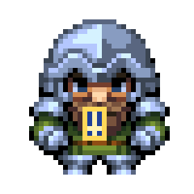
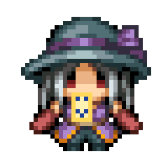
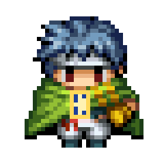
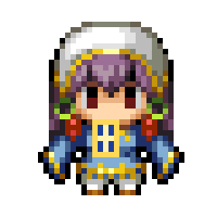
Corona del Ocaso
Ciénagas, puertos negros y fe de sombras. Umbra reclama la corona de la noche. Sus ciudades se alzan entre brumas y sus magos hablan con los muertos.
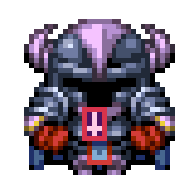
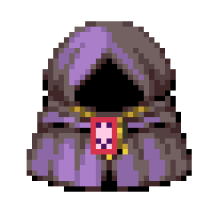
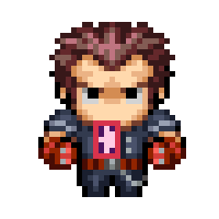
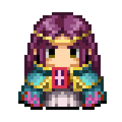
Tanque, daño, apoyo o invocador. Las cifras son las de nivel 1; cada nivel las mejora y el árbol de poderes añade pasivas.
Alba al oeste, Umbra al este y, en el centro, la Isla de la Cicatriz: la zona de guerra. Entre ellos se viaja en barco desde los muelles; a pie no se cruza el mar.
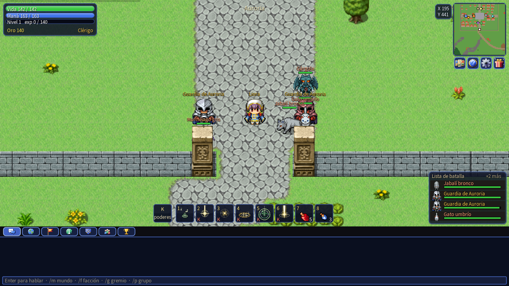
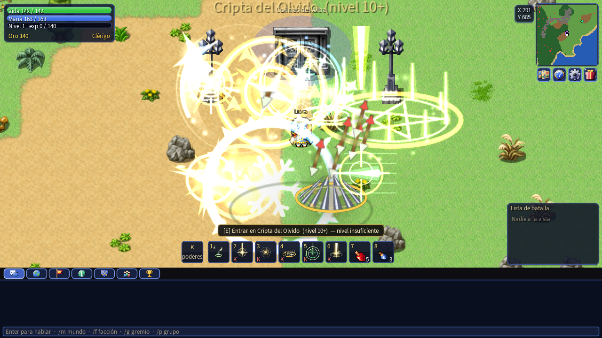
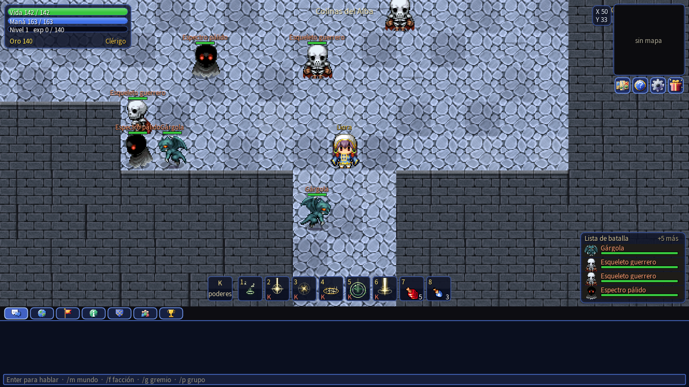
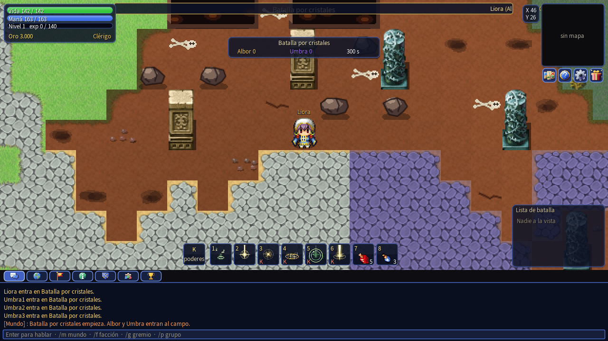
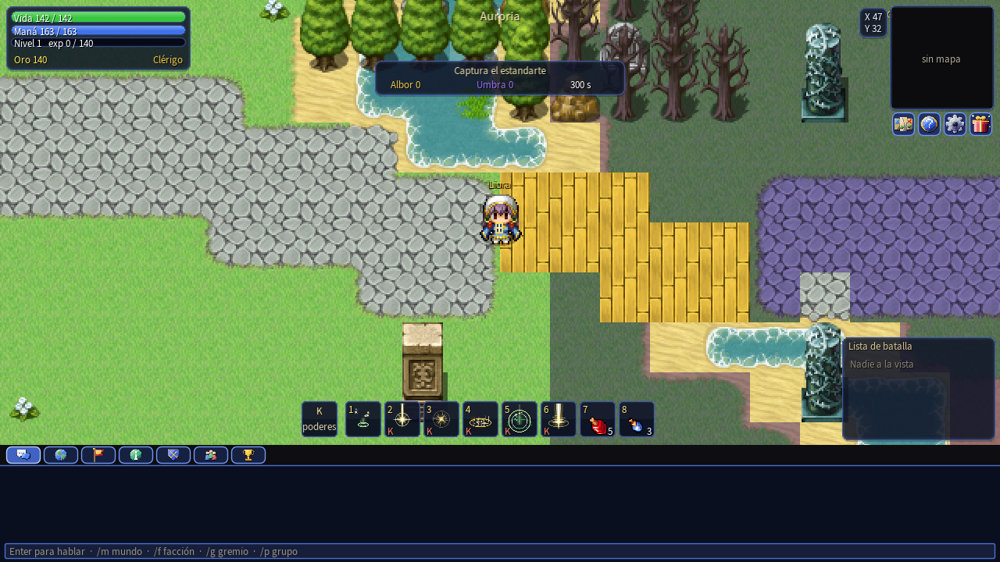
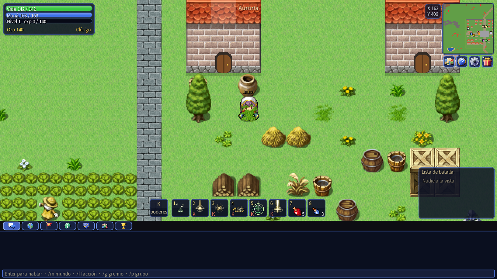
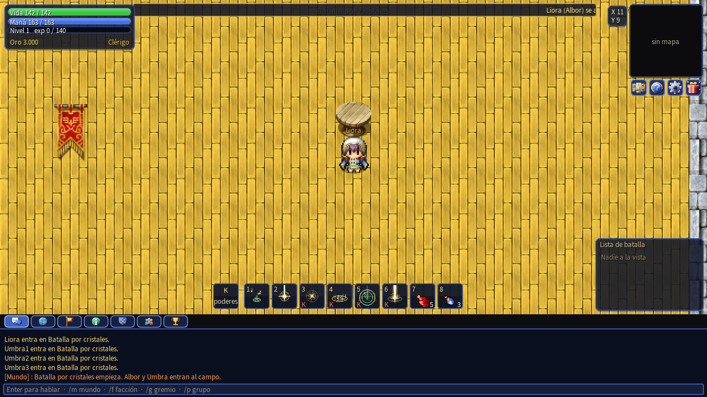
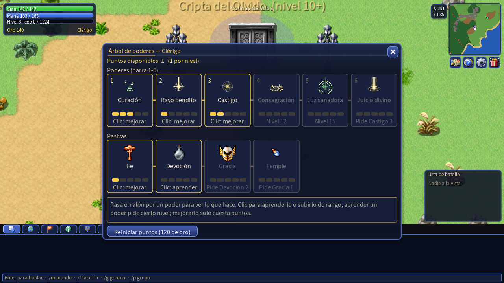
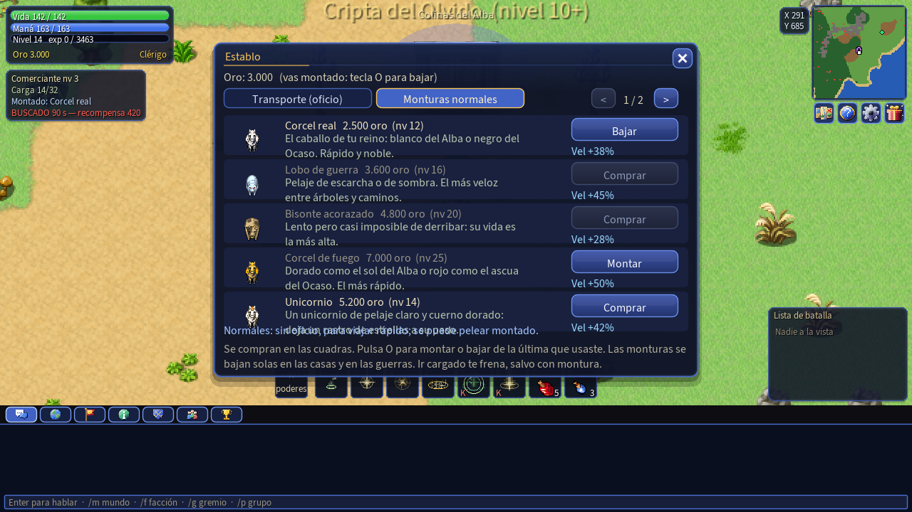
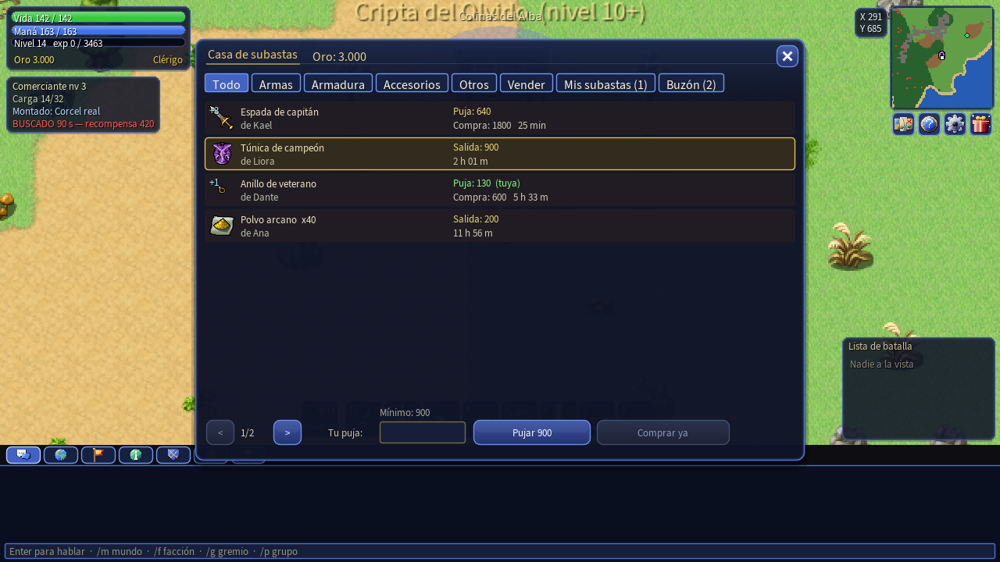
Tres puertas de piedra repartidas por el mapa. Dentro, las salas cambian de forma: ramas, bucles y callejones. Las criaturas no reaparecen una a una: vuelven todas cuando el jefe regresa.
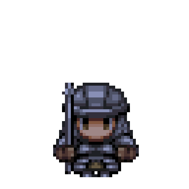
Un osario bajo la colina. Esqueletos, espectros y un caballero que no descansa.
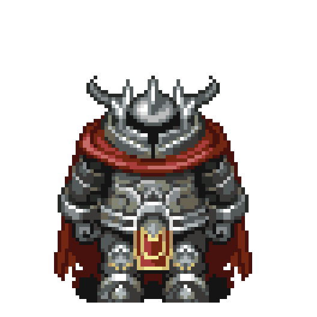
Galerías de escoria al rojo vivo. Gólems, demonios y un titán que despierta con el calor.
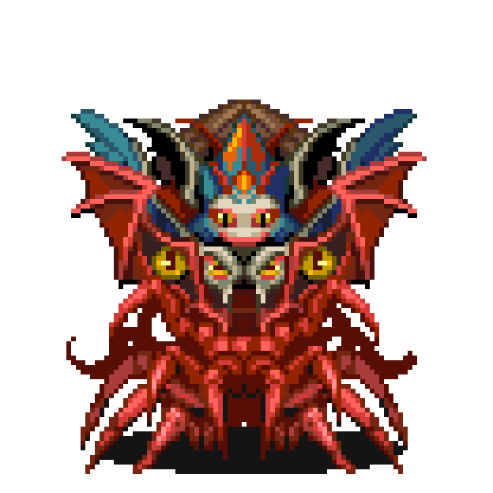
El templo donde la luz se apaga. Liches, ojos del abismo y el Behemot de guerra.
Púas que salen del suelo al compás. Un golpe seco del 9 % de tu vida: cruza cuando se escondan.
Chorros de llamas que avisan antes de encenderse. El daño más fuerte: el 12 % de tu vida por golpe.
Una nube que te daña cada medio segundo mientras sigas dentro. Rodéala o cruza sin detenerte.
Compra monturas en las cuadras de las ciudades o consigue las exclusivas en el Item Mall. Las de transporte se usan con el oficio activo; el resto, con el oficio apagado. Puedes guardar hasta 20 en tu colección y cambiar con la tecla O.
Dos eventos por equipos. Cuando se juntan los jugadores necesarios en cada bando, empieza el combate. Se anotan desde el panel de eventos y avisan por toda la pantalla.
Dos fortalezas con muros y tres puertas cada una. Derriba las estatuas enemigas, recoge los cristales que sueltan y llévalos a tu altar. Quien porta cristales se ve con un halo y los cristales girando sobre su cabeza: ¡a por él!
Un campo partido por un río, con puentes, vados y bosques propios de cada corona. Roba el estandarte enemigo y llévalo a tu base. Al portador se le ve la bandera a la espalda: protégelo, o caza al del otro bando. A tres capturas, ganas.
Al terminar, todos reciben oro, experiencia, polvo arcano y Monedas Corona: 5 si ganas y 2 si pierdes. El estandarte paga 1.000 de oro al bando ganador.
La beta ya está abierta. Descomprime, abre el juego, crea tu cuenta y elige tu corona. No hace falta instalar nada.
Versión beta · publicada el —
Descargar .zip¿Quieres comprobar que el archivo no se alteró? Compara su huella SHA-256 (clic para copiarla):
¿Dudas? Lee la guía de primeros pasos o los problemas frecuentes.